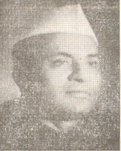

आई. के. गुजराल

प्रमुख कार्यकालहरू:
प्रधानमन्त्री
१९९७ - १९९८
कार्मिक सार्वजनिक गुनासो र निवृत्तिभरण मन्त्रालय, प्रधानमन्त्री
१९९७ - १९९८
आवास तथा शहरी गरिबी निवारण मन्त्रालय, प्रधानमन्त्री
१९९७ - १९९८

पहिलो इन्दिरा गान्धी मन्त्रालय
सञ्चार मन्त्रालय
राज्यमन्त्री
संसदीय मामिला मन्त्रालय
राज्यमन्त्री
सञ्चार मन्त्रालय
राज्यमन्त्री
सूचना तथा प्रसारण मन्त्रालय
राज्यमन्त्री
दोस्रो इन्दिरा गान्धी मन्त्रालय
वीपी सिंह मन्त्रालय
एचडी देवगौडा मन्त्रालय
आईके गुजराल मन्त्रालय
पहिलो इन्दिरा गान्धी मन्त्रालय

1_Upload_2854.pdf
1_Upload_2833.pdf

इंदिरा गांधी
o-Indira_Gandhi.htmlप्रधानमन्त्री
२४ जनवरी १९६६ - १८ मार्च १९७१

राम सुभग सिंह
o-Ram_Subhag_Singh.htmlक्याबिनेट मन्त्री
१३ मार्च १९६७ - १४ फेब्रुअरी १९६९
आई. के. गुजराल
o-I._K._Gujral.htmlराज्यमन्त्री
१८ मार्च १९६७ - १४ फेब्रुअरी १९६९
सान्दर्भिक आदेश
1_Upload_2854.pdf[1]१८ मार्च १९६७मन्त्रिपरिषद्1_Upload_2855.pdf[24]११ अप्रिल १९६७मन्त्रिपरिषद्1_Upload_2856.pdf[23]१२ सेप्टेम्बर १९६७मन्त्रिपरिषद्1_Upload_2857.pdf[23]२० नोभेम्बर १९६७मन्त्रिपरिषद्1_Upload_2835.pdf[22]२८ अप्रिल १९६८मन्त्रिपरिषद्1_Upload_2836.pdf[21]२३ अगस्ट १९६८मन्त्रिपरिषद्1_Upload_2833.pdf[12]१४ फेब्रुअरी १९६९पोर्टफोलियो परिवर्तन